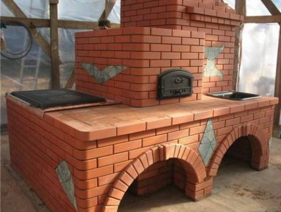
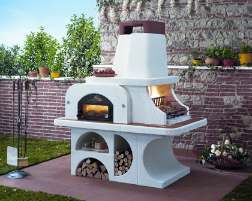

Зима потихоньку отступает, а это значит скоро будем открывать сезон дачного гриля! Но не обязательно ждать тепла, чтобы отметить шашлычком, какое-нибудь доброе событие если вы хорошо подготовлены. Уверен, многие проводят выходные на даче, уезжая от городской суеты и даже не задумываются, как улучшить их вроде бы неплохой отдых, ведь: «и так не плохо, мы на природе вдалеке от мирских забот, что еще нужно?!» Друзья, всю полноту ощущений от процесса готовки на природе вам поможет почувствовать удобная, практичная, большая! Фуд-зона для барбекю!
По словам профессиональных печников преимуществ у барбекю множество. Это, прежде всего, пожаробезопасность и отсутствие дыма, огонь в барбекю можно разводить при любой погоде. И конечно, что немаловажно, – это эстетика. Правильно спланированная и оборудованная зона барбекю может стать не только украшением, но и будет выполнять функции летней кухни и столовой. Барбекю можно использовать для копчения мяса и рыбы. Положив на тлеющие древесные угольки веточки ольхи, вишни или можжевельника, вы придадите копченой рыбе или мясу изумительный вкус.
Площадка для барбекю
Для нормального функционирования барбекю особое значение имеет место его расположение. Идеальным считается вариант, когда фуд-зона определяются в процессе планировки ландшафтного дизайна всего приусадебного или дачного участка. Если же дизайн участка уже создан, а решение обустроить зону барбекю созрело только сейчас, необходимо учесть несколько правил, чтобы грамотно вписать его в имеющийся ландшафтный дизайн.
Прежде всего, следует понимать, что эта территория предназначена для приготовления блюд на углях и предполагает действия с открытым огнем. Поэтому лучше, если такая зона будет располагаться вдали от дома, в тени сада. Поскольку посиделки иногда затягиваются до поздней ночи, необходимо решить вопрос освещения. Также при выборе места под печь большую роль играет доступность воды и дров. Площадку под зону барбекю лучше замостить, иначе газон или лужайка будут вытоптаны.
Как отличить барбекю от всего остального
Нередко происходит путаница понятий в том, что такое мангал, уличный камин и барбекю. Ведь это разные вещи, в их устройстве есть принципиальные отличия и выполняют они разные функции.

Если с мангалом все более-менее ясно, с его конструкцией все хорошо знакомы, то барбекю и уличный камин внешне довольно похожи и эти понятия очень часто путают.
Уличный камин
Уличный камин предназначен, в основном, для создания уютной атмосферы. В нем нет специальной решетки для приготовления пищи на углях.

Садовая печь
Разновидностью уличного камина можно считать садовую печь. В ней топка находится на уровне пояса человека, как в сельской печи. В садовой кухне пищу можно готовить только в посуде.

Печь барбекю
Печь барбекю по своей конструкции напоминает камин, топочное отделение приподнято на уровень пояса человека, как в садовой печи, но печь барбекю оснащена самыми разнообразными приспособлениями для жарки на углях мяса, овощей, рыбы.

Барбекю, в отличие от уличных каминов и садовых печей, могут быть стационарными и переносными. Переносные барбекю после пикника можно убрать. Еще они хороши тем, что не занимают много места и стоят недорого и. как временный элемент. Вписываются в любой ландшафтный дизайн. Недостатком переносных барбекю является то, что функциональные возможности их довольно ограничены и нет отвода дыма.
Стационарное барбекю из кирпича
Самый примитивный вариант барбекю несложно сделать своими руками. Сооружение будет представляет собой П-образную конструкцию из кирпичей. Высота этой конструкции - около метра. Между выступающими стенками крепятся две решетки параллельно друг другу. Расстояние между ними - 20-30 см. Нижняя решетка, более густая, предназначена для угля. На верхней решетке жарят мясо и другие продукты.

Более совершенным и сложным вариантом барбекю является стилизация его под уличный камин с конусообразной надстройкой и вытяжной трубой. Такой вариант, без сомнения, станет ярким акцентом в любом саду. Разумеется, построить такую конструкцию барбекю намного сложнее. Здесь нужны определенные знания тонкостей строительства печек, практические навыки кладки кирпича. Если вы далеки от секретов строительства, лучше всего это дело поручить специалисту.
Секреты хорошего барбекю
- оригинальным фундаментом, под кухонный комплекс, созданный на основе печи-барбекю, может стать прямоугольная бетонная плита, уложенная на песчано-гравийную подушку;
- колосниковая решетка предпочтительно должна быть цельнолитая, использования составной конструкции неизбежно приведет к ее термической деформации;
- создавая проект будущего барбекю, не забудьте предусмотреть в его конструкции место под дровницу, таким образом, чтобы поленья были укрыты от дождя, но при этом хорошо проветривались;
- металлические штыри, определяющие переменные уровни для угольного поддона могут быть заменены на заранее выложенные торцом ряды кирпичей;
- наружные слои кирпича будут дополнительно изолированы от высоких температур топки, если организовать для них термический защитный слой из специальной засыпки на основе базальта;
- в дымовой трубе можно предусмотреть место для самоварника и уходящие газы будут дополнительно «готовить» еще и душистый чай;
- если барбекю будет частью обеденной беседки, то в первую очередь надлежит возвести именно ее, а уже затем приступать непосредственно к кладке печи;
- внутреннюю полость топливника можно облицевать крупно колотым камнем, подобный ход повысить жаропрочность всей конструкции и придаст барбекю неповторимый вид, особенно если подобный материал присутствует в элементах наружной отделки;
- в дачное барбекю можно легко встроить вращающийся вертел, что позволит запекать цельные тушки животных;
По материалам сайтов http://101dizain.ru, http://www.vninform.ru/